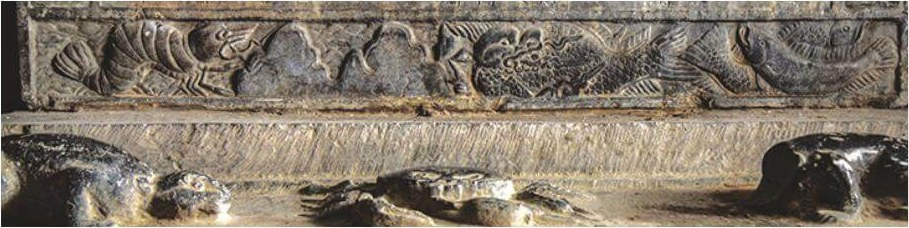

CỐ ĐÔ HOA LƯ
丁王庙碑亭


丁先皇庙内的石碑系统是一个极为珍贵的“石头史料库”。
目前的碑亭内保存着三块由石头雕刻、用汉字书写的古老石碑。
这三块石碑雕刻于三个不同的历史时期，每一块都带有独特的历史印记：
第一块是弘定九年（1608年）碑：这块石碑记载了都元帅总国政尚父平安王（即郑松）的功德。出于对前朝圣王功德的敬仰，他谨赐七亩田地用于祭祀，祈求国家繁荣昌盛；同时铭记封郡公裴时中及当地民众在重修庙宇中的功劳。
接下来是正和十七年（1696年）碑：这是尺寸最大、蕴含最多独特艺术价值的石碑。特别的是，这也是唯一一块完整记录了创作者姓名的石碑：铭文由一位担任翰林院官职的阮姓进士撰写；汉字部分由金刚寺住持和尚执笔；而直接雕凿、雕刻的能工巧匠则是清化省东山县安划社的艺人黎仁富。
探索石碑上的装饰艺术，游客定会对其庄严的宫廷风格与奔放的民间精神之间的奇妙结合感到惊叹：碑额上突显着“双凤朝日”的图案。四周是对称的花叶纹饰和盘龙，其中还穿插着猴子一家亲密地互相背负的温馨亲切画面。
最为独特的要数在石碑底座阶梯处浮雕得栩栩如生的“双鼠朝蟹”图案。螃蟹和老鼠本是与田野、与农民平淡生活息息相关的动物，如今却被庄重地装饰在庙宇的石碑上——这在古代雕刻艺术中是独一无二的结合。

与正面的平淡、质朴相反，石碑背面的雕刻则是柔美蜿蜒的龙形图案，象征着皇帝的威严。然而，这条龙并没有以威严的姿态出现，而是隐蔽在石碑之后。正是朝廷庄严、神圣的氛围与乡村生活幽默元素的精妙交融，造就了这块石碑独一无二的价值。

第三块是绍治三年（1843年）碑：记载了明命十八年（1838年）发生的事情，当时庙宇损坏，省官陈文中和裴公先上奏朝廷，获皇帝御赐500贯钱用于修缮。为了铭记这一恩德，到了绍治三年，人们竖立了这块石碑，以期流传万世。
可以肯定地说，丁先皇庙的石碑系统正是从过去寄来的“信件”，完整地保留了先人们的心血与伦理道德。历经岁月的沧桑，这些石头国宝依然在默默地培育着民族自豪感，提醒我们每一个人铭记文献之源，并更加珍惜国家独立的这些神圣价值。